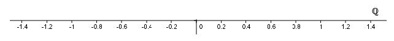
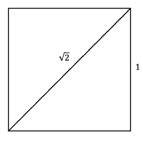

Chapter3Numbers, Real (\(\RR\)) and Rational (\(\QQ\))
The set of real numbers (denoted, \(\RR\)) is badly named. The real numbers are no more or less real — in the non-mathematical sense that they exist — than any other set of numbers, just like the set of rational numbers (\(\QQ\)), the set of integers (\(\ZZ\)), or the set of natural numbers (\(\NN\)). The name “real numbers” is (almost) an historical anomaly not unlike the name “Pythagorean Theorem” which was actually known and understood long before Pythagoras lived.
When calculus was being invented in the \(17\)th century, numbers were thoroughly understood, or so it was believed.
They were, after all, just numbers. Combine them. We call that addition. If you add them repeatedly we call it multiplication. Subtraction and division were similarly understood.
It was (and still is) useful to visualize these things in a more concrete way. If we take a stick of length 2 and another of length 3 and lay them end-to-end we get a length of 5. This is addition. If we lay them end-to-end but at right angles then our two sticks are the length and width of a rectangle whose area is 6. This is multiplication.
Of course measuring lengths with whole numbers has limitations, but these are not hard to fix. If we have a length (stick) of length 1 and another of length 2, then we can find another whose length when compared to 1 is the same (has the same proportion) as \(1\) is to \(2\text{.}\) That number of course, is \(1/2\text{.}\)
Figure3.0.1.
Notice how fraction notation reflects the operation of comparing 1 to 2. This comparison is usually referred to as the ratio of \(1\) to \(2\) so numbers of this sort are called rational numbers. The set of rational numbers is denoted \(\QQ\) for quotients. In grade school they were introduced to you as fractions. Once fractions are understood, this visualization using line segments (sticks) leads quite naturally to their representation with the rational number line.

Figure3.0.2.The Rational Number Line
This seems to work as a visualization because the rational numbers and the points on a line seem to share certain properties. Chief among these is that between any two points on the rational line there is another point, just as between any two rational numbers there is another rational number.
Problem3.0.3.
Let \(a, b, c, d\in\NN\) and find a rational number between \(a/b\) and \(c/d\text{.}\)
This is all very clean and satisfying until we examine it just a bit closer. Then it becomes quite mysterious. Consider again the rational numbers \(a/b\) and \(c/d\text{.}\) If we think of these as lengths we can ask, "Is there a third length, say \(\alpha\text{,}\) such that we can divide \(a/b\) into \(M\) pieces, each of length \(\alpha\)and also divide \(c/d\) into \(N\) pieces each of length \(\alpha?\)" A few minutes thought should convince you that this is the same as the problem of finding a common denominator so \(\alpha=\frac{1}{bd}\) will work nicely. (Confirm this yourself.)
You may be wondering what we’re making all of this fuss about. Obviously this is always true. In fact the previous paragraph gives an outline of a very nice little proof of this. Here are the theorem and its proof presented formally.
Theorem3.0.4.
Suppose \(a\text{,}\)\(b\text{,}\)\(c\text{,}\) and \(d\) are integers. There is a number \(\alpha\in\QQ\) such that \(M\alpha=a/b\) and \(N\alpha=c/d\) where \(M\) and \(N\) are also integers.
Proof.
To prove this theorem we will display \(\alpha\text{,}\)\(M\) and \(N\text{.}\) It is your responsibility to confirm that these actually work. Here they are: \(\alpha=1/bd\text{,}\)\(M=ad\text{,}\) and \(N=cb\text{.}\)
Problem3.0.5.
Confirm that \(\alpha, M, \text{ and } N\) as given in the proof of Theorem 3.0.4 satisfy the requirements of the theorem.
Theorem 3.0.4 suggests the following very deep and important question: Are there lengths which can not be expressed as the ratio of two integer lengths? The answer, of course, is yes. Otherwise we wouldn’t have asked the question.
One of the best known examples of such a number is the circumference of a circle with diameter 1. This is the number usually denoted by \(\pi\text{.}\) But circles are extremely complex objects — they only seem simple because they are so familiar. Arising as it does from a circle, you would expect the number \(\pi\) to be very complex as well and this is true. In fact \(\pi\) is an exceptionally weird number for a variety of reasons. Let’s start with something a little easier to think about.
Squares are simple. Two sets of parallel lines at right angles, all of the same length. What could be simpler? If we construct a square with sides having length 1 then its diagonal has length \(\sqrt{2}\text{.}\)

Figure3.0.6.A construction of \(\sqrt{2}\)
This is a number which cannot be expressed as the ratio of two integers. That is, it is irrational. This has been known since ancient times, but it is still quite disconcerting when first encountered. It seems so counter-intuitive that the intellect rebels. “This can’t be right,” it says. “That’s just crazy!”
Nevertheless it is true and we can prove it is true as follows.
What happens if we suppose that the square root of two can be expressed as a ratio of integers? We will show that this leads irrevocably to a conclusion that is manifestly not true.
Suppose \(\sqrt{2}=a/b\) where \(a\) and \(b\) are integers. Suppose further that the fraction \(a/b\) is in lowest terms. This assumption is crucial because if \(a/b\) is in lowest terms we know that at most only one of them is even.
Therefore \(a^2\) is even. But if \(a^2\) is even then \(a\) must be even also (why?). If \(a\) is even then \(a=2k\) for some integer \(k\text{.}\) Therefore
Therefore \(b^2\) is also even and so \(b\) must be even too. But this is impossible. We’ve just concluded that \(a\) and \(b\) are both even and this conclusion follows directly from our initial assumption that at most one of them could be even.
This is nonsense. Where is our error? It is not in any single step of our reasoning. That was all solid. Check it again to be sure.
Therefore our error must be in the initial assumption that \(\sqrt{2}\) could be expressed as a fraction. That assumption must therefore be false. In other words, \(\sqrt{2}\) cannot be so expressed.
Problem3.0.7.Irrational Numbers.
Show that each of the following numbers is irrational:
(a)
\(\sqrt{3}\)
(b)
\(\sqrt{5}\)
(c)
\(\sqrt[3]{2}\)
(d)
\(i\)\((=\sqrt{-1})\)
(e)
The square root of every positive integer which is not the square of an integer.
The fact that \(\sqrt{2}\) is not rational is cute and interesting, but unless, like the Pythagoreans of ancient Greece, you have a strongly held religious conviction that all numbers are rational, it does not seem terribly important. On the other hand, the very existence of \(\sqrt{2}\) raises some interesting questions. For example what can the symbol \(4^{\sqrt{2}}\) possibly mean? If the exponent were a rational number, say \(m/n\text{,}\) then clearly \(4^{m/n}=\sqrt[n]{4^m}\text{.}\) But since \(\sqrt{2}\neq m/n\) for any integers \(m\) and \(n\) how do we interpret \(4^{\sqrt{2}}?\) Does it have any meaning at all? The more you think about this, the more puzzling the existence of irrational numbers becomes. Suppose for example we reconsider the construction of a line segment of length \(\sqrt{2}\text{.}\) It is clear that the construction works and that we really can build such a line segment. It exists.
Repeat the construction but this time let’s put the base side on the rational line.
Figure3.0.8.
We know that the diagonal of this square is \(\sqrt{2}\) as indicated. And we know that \(\sqrt{2}\) is not a rational number.
Now leave the diagonal pinned at \((0,0)\) but allow it to rotate down so that it coincides with the \(x-\)axis.
Figure3.0.9.
The end of our diagonal will trace out an arc of the circle with radius \(\sqrt{2}\text{.}\) When the diagonal coincides with the \(x-\)axis, its endpoint will obviously be the point \((\sqrt{2}, 0)\) as shown.
But wait! We’re using the rational number line for our \(x-\)axis. That means the only points on the \(x-\)axis are those that correspond to rational numbers (fractions). But we know that \(\sqrt{2}\) is not rational! Conclusion: There is no point \((\sqrt{2},0)\text{.}\) It simply doesn’t exist.
Put differently, there is a hole in the rational number line right where \(\sqrt{2}\) should be.
Figure3.0.10.
This is weird!
Recall that between any two rational numbers there is always another. This fact is what led us to represent the rational numbers with a line in the first place.
But it’s even worse than that. It’s straightforward to show that \(\sqrt{3}\text{,}\)\(\sqrt{5}\text{,}\) etc. are all irrational too. So are \(\pi\) and \(e\text{,}\) though they aren’t as easy to show. It seems that the rational line has a bunch of holes in it. Infinitely many.
And yet, the following theorem is true
Theorem3.0.11.
Between any two distinct real numbers there is a rational number.
Between any two distinct real numbers there is an irrational number.
Both parts of this theorem rely on a judicious use of what is now called the Archimedean Property of the Real Number System, which can be formally stated as follows.
Principle3.0.12.The Archimedean Property.
Given any two positive real numbers, \(a\) and \(b\text{,}\) there is a positive integer, \(n\) such that \(na>b\text{.}\)
Physically this says that we can empty an ocean \(b\) with a teaspoon \(a\text{,}\) provided we are willing to use the teaspoon a large number of times \(n\text{.}\)
This is such an intuitively straightforward concept that it is easy to accept it without proof. Until the invention of calculus, and even for some time after that, it was simply assumed. However as the foundational problems posed by the concepts of calculus were understood and solved we were eventually led to a deeper understanding of the complexities of the real number system. The Archimedean Property is no longer taken as an unproved axiom, but rather it is now understood to be a consequence of other axioms. We will show this later, but for now we will accept it as obviously true just as Archimedes did.
With the invention of calculus, mathematicians of the seventeenth century began to use objects which didn’t satisfy the Archimedean Property (in fact, so did Archimedes). As we shall see in the next chapter, when Leibniz wrote the first paper on his version of the calculus, he followed this practice by explicitly laying out rules for manipulating infinitely small quantities (infinitesimals). These were taken to be actual numbers which are not zero and yet smaller than any real number. The notation he used was \(\dx{ x}\) (an infinitely small displacement in the \(x\) direction), and \(\dx{ y}\) (an infinitely small displacement in the \(y\) direction). These symbols should look familiar to you. They are the same \(\dx{ y}\) and \(\dx{ x}\) used to form the derivative symbol \(\dfdx{y}{x}\) that you learned about in calculus.
Mathematicians of the seventeenth and eighteenth centuries made amazing scientific and mathematical progress exploiting these infinitesimals, even though they were foundationally suspect. No matter how many times you add the infinitesimal \(\dx{ x}\) to itself the result will not be bigger than, say \(10^{-1000}\text{,}\) which is very bizarre.
When foundational issues came to the forefront, infinitesimals fell somewhat out of favor. You probably didn’t use them very much in calculus. Most of the time you probably used the prime notation, \(f^\prime(x)\) introduced by Lagrange in the eighteenth century. Some of the themes in this book are: Why differentials fell out of favor, what were they replaced with and how the modern notations you learned in calculus evolved over time.
To conclude this aside on the Archimedean Property, the idea of infinitesimals was revisited in the twentieth century by the logician Abraham Robinson in [12]. Robinson was able to put the idea of infinitesimals on a solid logical foundation. But in the 18th century, the existence of infinitesimal numbers was shaky to say the very least. However this did not prevent mathematicians from successfully exploiting these infinitely small quantities.
We will come back to this saga in later chapters, but for now we return to Theorem 3.0.11.
Sketch of Proof.
We will outline the proof of part (a) of Theorem 3.0.11 and indicate how it can be used to prove part b.
Let \(\alpha\) and \(\beta\) be real numbers with \(\alpha > \beta\text{.}\) There are two cases.
Case 1:.
\(\alpha-\beta > 1\text{.}\) In this case there is at least one integer between \(\alpha\) and \(\beta\text{.}\) Since integers are rational we are done.
Case 2:.
\(\alpha-\beta \le 1\text{.}\) In this case, by the Archimedean Property there is a positive integer, say \(n\text{,}\) such that \(n(\alpha-\beta) = n\alpha-n\beta
> 1\text{.}\) Now there will be an integer between \(n\alpha\) and \(n\beta\text{.}\) You should now be able to find a rational number between \(\alpha\) and \(\beta\text{.}\)
For part b, divide \(\alpha\) and \(\beta\) by any positive irrational number and apply part a. There are a couple of details to keep in mind. These are considered in the following problem.
Problem3.0.13.
(a)
Prove that the product of a nonzero rational number and an irrational number is irrational.
As a practical matter, the existence of irrational numbers isn’t really very important. In light of Theorem 3.0.11, any irrational number can be approximated arbitrarily closely by a rational number. So if we’re designing a bridge and \(\sqrt{2}\) is needed we just use \(1.414\) instead. The error introduced is less than \(0.001 =1/1000\) so it probably doesn’t matter.
But from a theoretical point of view this is devastating. When calculus was invented, the rational numbers were suddenly not up to the task of justifying the concepts and operations we needed to work with.
Newton explicitly founded his version of calculus on the assumption that we can think of variable quantities as being generated by a continuous motion. If our number system has holes in it such continuous motion is impossible because we have no way to jump over the gaps. So Newton simply postulated that there were no holes. He filled in the hole where \(\sqrt{2}\) should be. He simply said, yes there is a number there called \(\sqrt{2}\) and he did the same with all of the other holes.
To be sure there is no record of Newton explicitly saying, “Here’s how I’m going to fill in the holes in the rational number line.” Along with everyone else at the time, he simply assumed there were no holes and moved on. It took about \(200\) years of puzzling and arguing over the contradictions, anomalies and paradoxes to work out the consequences of that apparently simple assumption. The task may not yet be fully accomplished, but by the 20th century the properties of the real number system (\(\RR\)) as an extension of the rational number system (\(\QQ\)) were well understood. Here are both systems visualized as lines:
Figure3.0.14.\(\RR\) and \(\QQ\)
Impressive, no?
The reason they look alike, except for the labels \(\RR\) and \(\QQ\) of course, is that our ability to draw sketches of the objects we’re studying utterly fails when we try to sketch \(\RR\text{,}\) as different from \(\QQ\text{.}\) All of the holes in \(\QQ\) really are there, but the non-holes are packed together so closely that we can’t separate them in a drawing. This inability to sketch the objects we study will be a frequent source of frustration.
Of course, this will not stop us from drawing sketches. When we do, our imaginations will save us because it is possible to imagine\(\QQ\) as distinct from \(\RR\text{.}\) But put away the idea that a sketch is an accurate representation of anything. At best our sketches will only be aids to the imagination.
So, at this point we will simply assume the existence of the real numbers. We will assume also that they have all of the properties that we are used to. This is perfectly acceptable as long as we make our assumptions explicit. However we need to be aware that, so far, the existence and properties of the real numbers is an assumption that has not been logically derived. Any time we make an assumption we need to be prepared to either abandon it completely if we find that it leads to nonsensical results, or to re-examine the assumption in the light of these results to see if we can find another assumption that subsumes the first and explains the (apparently) nonsensical results.